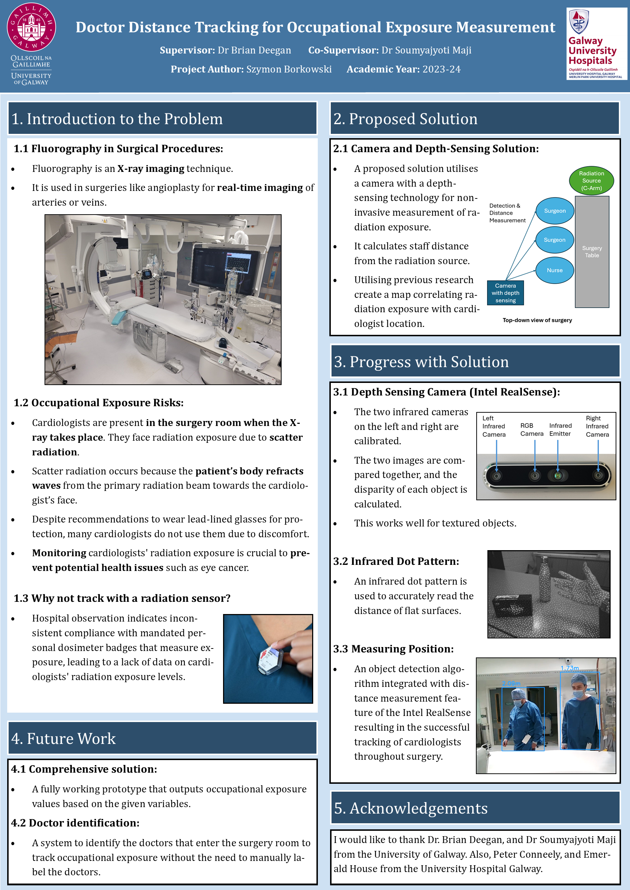

Doctor Distance Tracking for Occupational Exposure Measurement
Key Contributions
- Collaborated with the Medical Physics and Engineering Department at University Hospital Galway.
- Utilized depth-sensing camera technology for non-invasive measurement of radiation exposure.
- Created a correlation map linking cardiologist location to radiation exposure levels based on historical data.
- Integrated object detection algorithms with Intel RealSense distance measurement to track cardiologists in real-time during surgery.
Project Poster
This project is described in further technical detail in the poster below.
